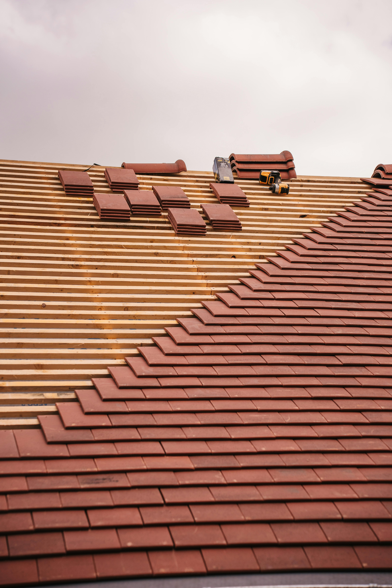
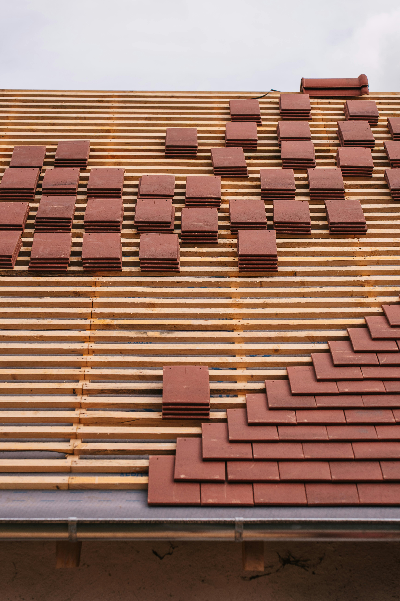

Votre expert en couverture, maçonnerie, peinture et isolation en Essonne
Basé en Essonne, CMP Rénovation est votre spécialiste en couverture, maçonnerie, peinture et isolation. Nous intervenons partout dans le 91, notamment à Athis-Mons, Viry-Châtillon, Juvisy-sur-Orge, Savigny-sur-Orge, Massy et alentours. Nos artisans qualifiés utilisent des matériaux de qualité pour des travaux durables et esthétiques. Avec 10 ans d’expérience, nous proposons des solutions sur mesure pour particuliers et professionnels. Demandez votre devis gratuit !
Demander un devis gratuitDevis et déplacements gratuits dans tout le 91
Couverture, maçonnerie, peinture et isolation à Athis-Mons, Viry-Châtillon, Juvisy-sur-Orge, Savigny-sur-Orge, Massy et partout en Essonne.
Votre maison ou local professionnel a besoin d’une rénovation ? Toiture abîmée, murs à construire, peinture à rafraîchir ou isolation à améliorer ?
Basé en Essonne, CMP Rénovation vous accompagne de A à Z avec des artisans expérimentés. Nous intervenons rapidement à Athis-Mons, Viry-Châtillon, Juvisy-sur-Orge, Savigny-sur-Orge, Massy et dans tout le département.
Avec 10 ans d’expérience, nous proposons :
Pour tous vos travaux de rénovation, contactez CMP Rénovation dès maintenant !